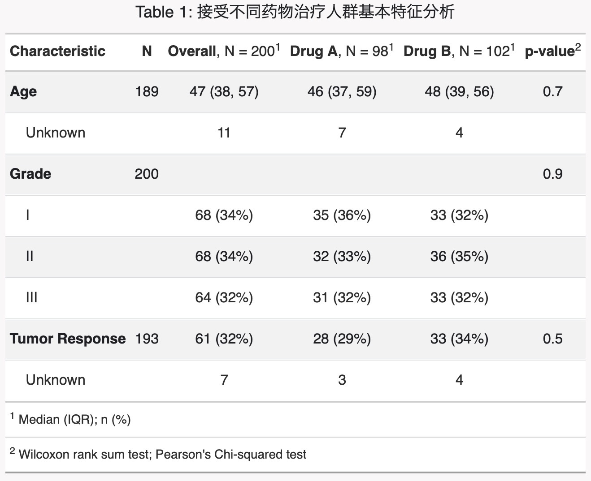
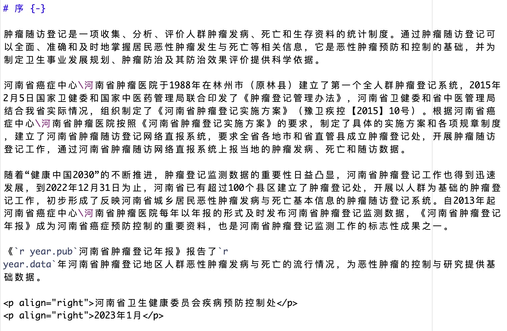

R语言促进高效率肿瘤登记报告
基于R Markdown / Quarto的可重复性报告撰写
陈琼
🏥河南省癌症中心 河南省肿瘤医院
Tuesday May 16, 2023
肿瘤登记工作介绍
人群肿瘤登记的目的和意义
肿瘤登记是系统性、经常性搜集有关肿瘤及肿瘤患者信息的统计制度。
了解癌症发病、死亡、生存情况
掌握癌症疾病负担与变化趋势
了解癌症在不同地区和人群中的分布特征
人群肿瘤登记的目的和意义
肿瘤登记是系统性、经常性收集有关肿瘤及肿瘤患者信息的统计制度。
为制定癌症防控策略与措施、规划与计划提供科学依据
为癌症的临床研究提供信息
为癌症防控效果评价提供数据支持
河南省肿瘤登记工作进展
- 肿瘤登记工作覆盖130个县区
- 达到数据利用标准的登记处达到42个，覆盖全省32%的人口
- 连续10年出版《河南省肿瘤登记年报》
组织架构
省级登记处
河南省癌症中心
职责
- 制定全省工作计划、实施方案
- 建立和完善肿瘤登记信息系统
- 技术指导、人员培训、质量控制和考核评价
- 督导检查
- 数据分析和报告
市级登记处
市级CDC/肿瘤医院
职责
- 市级技术指导、人员培训
- 质量控制
- 督导检查
- 数据分析和报告
县区级登记处
县区级CDC
职责
- 技术指导、人员培训
- 质量控制
- 督导检查
- 统计分析和报告
数据来源: 河南省肿瘤登记管理办法（豫卫2015(10号)文件）
收集数据内容
肿瘤登记收集一定人群中所有恶性肿瘤、中枢神经系统良性肿瘤以及原位癌。
肿瘤收集范围(ICD10)
- C00-C97
- D32-D33
- D42-D43
- D45-D47
- 原位癌
人口数据
以县区为单位收集登记处覆盖人群分年龄、分性别户籍人口数
寿命表数据
以县区为单位收集登记处覆盖人群分年龄、分性别全死因死亡数以估计寿命表
数据项目
肿瘤登记收集的变量包括以下7个部分（图 1）
- 个人识别信息
- 人口学信息
- 肿瘤信息
- 治疗信息
- 随访信息
- 预后信息
- 信息来源
classDiagram
class 个人识别信息 {
登记处编号
身份证号
姓名
户籍地址
常住地址
}
class 人口学信息 {
性别
年龄
出生日期
婚姻状态
职业
民族
}
class 肿瘤信息 {
发病日期
诊断依据
原发部位ICDO3
形态学ICDO3
行为ICDO3
分级ICDO3
临床分期/TNM分期
多原发状态
双边性
}
class 治疗信息 {
治疗方法
}
class 随访相关信息 {
联系电话
联系人
联系人电话
常住地址
}
class 结局信息 {
最后接触日期
生存状态
死亡日期
死亡原因
死亡地点
}
class 信息来源 {
报告医院
住院号/门诊号
报告医师
报告日期
}
个人识别信息 --|> 人口学信息
个人识别信息 --|> 肿瘤信息
个人识别信息 --|> 治疗信息
个人识别信息 --|> 随访相关信息
个人识别信息 --|> 结局信息
个人识别信息 --|> 信息来源
数据来源
肿瘤登记强调多源上报、数据来源于医院、医保系统、县-乡-村医师网、全死因数据等。（图 5 ）
flowchart TD A[(肿瘤登记数据库)] --> B(医院) A --> B A --> C(县-乡-村三级医师网络) A --> D(医疗保险) A --> E(死因监测) A --> F(殡葬系统) A --> G(公安系统) B --> b1(住院患者数据) B --> b2(门诊患者数据) B --> b3(病案部门) B --> b4(病理诊断部门) D --> d1(新农合) D --> d2(城镇医保) D --> d3(职工医保)
肿瘤分类与编码
| 部位 | ICD10 |
|---|---|
| 口腔和咽 (除外鼻咽癌和喉) | C00-10,C12-14（除外C10.1） |
| 鼻咽癌 | C11 |
| 食管 | C15 |
| 胃 | C16 |
| 结直肠肛门 | C18-21 |
| 肝脏 | C22 |
| 胆囊及其他 | C23-C24 |
| 胰腺 | C25 |
| 喉 | C32，C10.1 |
| 气管、支气管、肺 | C33-C34 |
| 骨 | C40-C41 |
| 乳房 | C50 |
| 子宫颈 | C53 |
| 子宫体及子宫部位不明 | C54-55 |
| 卵巢 | C56 |
| 前列腺 | C61 |
| 睾丸 | C62 |
| 肾及泌尿系统不明 | C64-66，68 |
| 膀胱 | C67 |
| 脑,神经系统 | C70-C72 |
| 甲状腺 | C73 |
| 淋巴瘤 | C81-85,88,90,96 |
| 白血病 | C91-C95 |
| 其它 | Other（除外以上） |
| 所有部位合计 | ALL |
质量控制
质量控制的意义
- 使不同地区之间的数据具有可比性
- 代表登记处所在地区的癌症人群
- 使癌症数据真实有效
flowchart LR A[质量控制指标] --> B(可比性) A --> C(完整性) A --> D(有效性) A --> E(时效性) B --> b1(发病的定义) B --> b2(多原发判断) B --> b3(分类与编码) B --> b4(死亡证明) C --> c1(死亡发病比M:I) C --> c2(只有死亡医学证明书比例DCO%) C --> c3(组织学确诊比例MV%) C --> c4(不同时间发病率的稳定性) C --> c5(年龄别发病率曲线) D --> d1(组织学确诊比例) D --> d2(只有死亡医学证明书比例DC\%) D --> d3(部位不明比例UB%) D --> d4(数据内部一致性)
质量控制
肿瘤登记收集的变量或者变量组合之间存在一定的逻辑关系，通过对单个变量或变量组合之间的逻辑关系进行审查，以提高肿瘤登记数据有效性。
单个项目
- 出生日期
- 发病日期
- 年龄、性别
- 发病部位
- 形态学
- 行为和分级
项目组合
- 性别/部位
- 部位/组织学学
- 年龄/部位/组织学
- 行为/部位
- 行为/组织学
- 性别/组织学
校验结果
- 正确✅
- 警告⚠️
- 错误❌
肿瘤登记报告流程
flowchart LR A(数据来源单位) --> B(县区级登记处) B --> C(市级登记处) C --> D(省级登记处) D --> E(质量控制) E --> B B --> A E --> C E --> F(综合评估) F --> G(年报撰写及发布)
主要内容
- 质量控制报告撰写
- 肿瘤登记报告撰写
特点
- 登记处数量多(130个县区)
- 县区级专业人员能力不足
- 质控报告反馈至市级和县区级
文学编程和可能重复性报告概念的引入
文学编程:强调以自然语言呈现计算逻辑，以文本描述和计算代码相互混合的方式，从计算机代码的执行逻辑过渡到人的思维逻辑。
可重复性报告:利用代码把数据分析过程和报告撰写过程串起来，最终生成可重复性的报告。
- 基于原始数据更新报告
- 报告的批量化生成
- 多种格式输出(html、docx)
基于R Markdown / Quarto 的可重复性报告
Markdown
它允许人们使用易读易写的纯文本格式编写文档，然后转换成有效的 XHTML（或者HTML）文档。
- 轻量级标记语言
- 轻量化、易读易写、对图片、表格、数学公式支持
- Github、Reddit、Diaspora、Stack Exchange、OpenStreetMap、SourceForge、简书等，甚至还能被使用来撰写电子书
R Markdown
R Markdown把报告文本和统计计算代码整合起来，从而实现一次输入多种格式输出(HTML、PDF、WORD等)。
- YAML 元数据设置
- 代码块（R、Python等）
- Markdown文本
R Markdown
YAML元数据
---
title: "河南省恶性肿瘤2017-2019年5年相对生存率"
authors:
- name: 陈琼
affiliations:
- ref: zlyy
- name: 张明霞
affiliations:
- ref: zlyy
- ref: lzu
- name: 郭兰伟
affiliations:
- ref: zlyy
- name: 郑黎阳
affiliations:
- ref: zlyy
- name: 刘纯亚
affiliations:
- ref: zlyy
- name: 王一先
affiliations:
- ref: zlyy
- name: 刘茵
affiliations:
- ref: zlyy
- name: 王红
affiliations:
- ref: zlyy
- name: 徐慧芳
affiliations:
- ref: zlyy
- name: 康瑞华
affiliations:
- ref: zlyy
- name: 王潇杨
affiliations:
- ref: zlyy
- name: 刘曙正
affiliations:
- ref: zlyy
- name: 张韶凯
affiliations:
- ref: zlyy
corresponding: true
email: shaokaizhang@126.com
affiliations:
- id: zlyy
name: 郑州大学附属肿瘤医院(河南省肿瘤医院)，疾病预防控制科；河南省肿瘤防控工程研究中心；河南省肿瘤预防国际联合实验室，郑州，450008。
city: 郑州
state: 河南省
- id: lzu
name: 兰州大学公共卫生学院
city: 兰州
state: 甘肃省
filters:
- authors-block
#prefer-html: true
execute:
echo: false
warning: false
message: false
tbl-cap-location: top
#lang: zh
crossref:
fig-title: 图
tbl-title: 表
title-delim: ""
tbl-prefix: 表
format:
docx:
number-sections: true
number-depth: 3
reference-doc: chinese.docx
bibliography: survival17-19.bib
csl: "zhonghua.csl"
editor_options:
chunk_output_type: console
---R Markdown
代码块

R Markdown
Markdown文本
**通讯作者**：张韶凯，Email: shaokaizhang\@126.com
【**摘要**】
**目的** 利用河南省人群肿瘤登记数据分析河南省人群癌症5年相对生存率。
**方法** 提取河南省肿瘤登记数据库中25个肿瘤登记处诊断日期在2014年1月1日至2019年12月31日之间以及2014年之前诊断但是2019年12月31日之前仍然存活的癌症病例（ICD10编码范围：C00-C97、D32-D33、D42-D43和D45-D47），随访截止日期设定为2019年12月31日，利用现时生存分析法和R语言"periodR"包的EdererII法计算癌症的5年相对生存率。
**结果** 2017-2019年期间，河南省0-14岁儿童癌症的5年相对生存率为62.5%，15岁及以上成人癌症5年相对生存率为44.2%，年龄标化后为40.7%。总体癌症5年生存率呈现女性高于男性（47.1% VS 34.4%, *P*\<0.01）、城市地区高于农村地区（46.4% VS 39.2%, *P*\<0.01）的特点。在不同发病部位的癌症患者中，甲状腺癌、睾丸癌及乳腺癌具有最高的5年相对生存率，分别为86.4%、74.4%和73.1%；肝癌、胰腺癌、肺癌具有最低的5年相对生存率，分别为19.1%、20.5%和24.3%。
**结论** 河南省儿童及成人癌症患者总体5年相对生存率仍然较低，应根据河南省癌症流行情况及不同癌症的生存率数据调整和优化癌症防控策略和措施。
【**关键词**】 癌症；癌症防控；现时生存分析；5年相对生存率；河南省
The 5-year relative survival among cancer patients diagnosed during 2017-2019 in Henan Province, China {.unnumbered}
Qiong Chen$^1$, Mingxia Zhang$^12$, Lanwei Guo$^1$, Liyang Zheng$^1$, Yixian Wang$^1$, Yin Liu$^1$, Hong Wang$^1$, Huifang Xu$^1$, Ruihua Kang$^1$, Xiaoyang Wang$^1$, Shuzheng Liu$^1$, Shaokai Zhang$^1$
$^1$ The Affiliated Cancer Hospital of Zhengzhou University & Henan Cancer Hospital, Zhengzhou 450008, China。 $^2$ School of Public Health, Lanzhou University.
**Corresponding** to：Shaokai Zhang，Email:shaokaizhang\@126.com
**Abstract**
**Objective** To analyze the 5-year relative survival rate of cancer in the population of Henan Province using cancer registration data.
**Methods** Cancer cases were extracted from the cancer registration database of Henan Province with the diagnosis date between January 1, 2014 and December 31, 2019, and those diagnosed before 2014 but still alive by December 31, 2019 were included. The follow-up date was set as December 31, 2019. The 5-year relative survival rate of cancer was calculated using the period survival analysis method and the Ederer II method in the R package "periodR".
**Results** The 5-year cancer relative survival rate in children aged 0-14 in Henan Province was 62.5% during 2017-2019, while that in adults aged 15 and above was 44.2%, age-standardized to 40.7%. The overall cancer 5-year survival rate was higher in females than in males (47.1% vs 34.4%, *P*\<0.01) and in urban areas than in rural areas (46.4% vs 39.2%, *P*\<0.01). Among patients with different cancer sites, thyroid cancer, testicular cancer, and breast cancer had the highest 5-year relative survival rates, which were 86.4%, 74.4%, and 73.1%, respectively. Liver cancer, pancreatic cancer, and lung cancer had the lowest 5-year relative survival rates, which were 19.1%, 20.5%, and 24.3%, respectively.
**Conclusion** The overall 5-year relative survival rate of cancer in children and adults in Henan Province is still low, and cancer prevention and control strategies and measures should be adjusted and optimized according to the cancer incidence and survival rate data in Henan Province.
**Keywords**: Cancer; cancer control; period survival; 5-year relative survival; HenanR Markdown
R 通过一系列包实现了文学编程的主要功能。
- rmarkdown
- knitr
- bookdown
- blogdown
- thesisdown
- posterdown
- distill
- xaringan
- tinytex

Pandoc
Pandoc是使用Haskell语言编写的一款跨平台、自由开源及命令行界面的标记语言转换工具，可实现不同标记语言间的格式转换。
- HTML格式：包括XHTML，HTML5及HTML slide
- 文字处理软件格式：包括docx、odt、OpenDocument XML
- 电子书格式：包括EPUB（第2版及第3版）、FictionBook2
- 技术文档格式：包括DocBook、GNU TexInfo、Groff manpages、Haddock
- 页面布局格式：InDesign ICML
- 大纲处理标记语言格式：OPML
- TeX格式：包括LaTeX、ConTeXt、LaTeX Beamer
- PDF格式：需要LaTeX支持
- 轻量级标记语言格式：包括Markdown、reStructuredText、textile、Org-Mode、MediaWiki标记语言、AsciiDoc
- 自定义格式：可使用lua自定义转换规则
Quarto 下一代 R Markdown
Quarto® is an open-source scientific and technical publishing system built on Pandoc.

Quarto特点
- 它可以独立于R、Rstudio或者其他软件如python等编程或统计软件，支持在Macos、Linux、Windows系统运行；
- Quarto继承了一些Rmd包的特点、如blogdown、bookdown、xaringan等；
- 在生成website、blog、book、slides等各种格式中有了统一的语法，缩小了使用者的学习成本；
- 支持的语言包括R、Python、Julia和Observable；
- quarto有了新的文档格式，文档扩展名为“.qmd”, 代码块选项的形式有了变化。
- 支持科技写作的特征，如公式、引用、交叉引用、图、表等。
为什么要使用 Quarto / R Markdown ?
flowchart LR
A[(数据清洗)] --> B(统计分析)
B --> C{结果初步评估}
C --> B
C --> D(统计制表)
D --> E[报告撰写]
E -- 发现不合理结果 --> B
E --> F[出版流程]
F --> G[专家意见]
G -- 建议重新统计 --> B
G -- 不需要重新统计 --> E
G --> H[正式出版]
可能存在的情形
- 统计分析(SAS、R、SPSS、EXCEL)
- 数据可视化展现(R、SAS、EXCEL)
- 撰写报告(WORD、WPS、其它文字处理软件)
- 图表交叉引用
- 参考文献的引用(Zotero、Endnote、Mendley)
存在的问题
- 统计过程与报告撰写的割裂
- 存在重复性工作的可能
应用场景
- 科技论文撰写
- 书籍编写
- 幻灯片制作
- 博客
- 网站
应用场景
- 科技论文撰写
- 书籍编写
- 幻灯片制作
- 博客
- 网站
应用场景
- 科技论文撰写
- 书籍编写
- 幻灯片制作
- 博客
- 网站

应用场景
- 科技论文撰写
- 书籍编写
- 幻灯片制作
- 博客
- 网站
肿瘤登记报告的实际应用分享
Cancer Incidence in Five Continents-IARC
YAML元数据设置
---
title: "河南省《五大洲发病率第12卷》数据上报审核程序"
subtitle: "登记处："
author:
- "2013-2017年"
- "Qiong Chen @ Henan Cancer Center/Henan Cancer Hospital"
date: ""
output:
prettydoc::html_pretty:
theme: cayman
number_section: TRUE
highlight: github
vignette: >
%\VignetteIndexEntry{Vignette Title}
%\VignetteEncoding{UTF-8}
%\VignetteEngine{knitr::rmarkdown}
editor_options:
chunk_output_type: console
---Cancer Incidence in Five Continents-IARC
代码块
knitr::opts_chunk$set(
echo = FALSE,
warning = FALSE,
fig.width=10,
fig.height=8
)
library(dplyr)
library(knitr)
library(kableExtra)
library(reshape2)
library(ggplot2)
library(tidyr)
period<-20132017
#率的统计学检验
report <- report%>%
group_by(year,sex,code)%>%
mutate(y_ics2000=sum(ics2000)/n(),
a_ics2000=sum((ics2000-sum(ics2000)/n())^2/var_ics2000)/(n()-1),
a_ics2000=ifelse(a_ics2000<=1,1,a_ics2000),
z_ics2000=(ics2000-sum(ics2000)/n())^2/(a_ics2000*var_ics2000),
y_dcs2000=sum(dcs2000)/n(),
a_dcs2000=sum((dcs2000-sum(dcs2000)/n())^2/var_dcs2000)/(n()-1),
a_dcs2000=ifelse(a_dcs2000<=1,1,a_dcs2000),
z_dcs2000=(dcs2000-sum(dcs2000)/n())^2/(a_dcs2000*var_dcs2000),
y_iws85=sum(iws85)/n(),
a_iws85=sum((iws85-sum(iws85)/n())^2/var_iws85)/(n()-1),
a_iws85=ifelse(a_iws85<=1,1,a_iws85),
z_iws85=(iws85-sum(iws85)/n())^2/(a_iws85*var_iws85),
y_dws85=sum(dws85)/n(),
a_dws85=sum((dws85-sum(dws85)/n())^2/var_dws85)/(n()-1),
a_dws85=ifelse(a_dws85<=1,1,a_dws85),
z_dws85=(dws85-sum(dws85)/n())^2/(a_dws85*var_dws85),
mvn=b5+b6+b7,
p1=(b5+b6+b7)/fhj,
p=sum(mvn)/sum(fhj),
a_mv=sum((mvn-p*fhj)^2/(fhj*p1*(1-p1)))/(n()-1),
z_mv=(mvn-p*fhj)^2/(a_mv*p1*(1-p1)*fhj),
a_mi=sum(shj)/sum(fhj),
aa_mi=sum((shj-a_mi*fhj)^2/((shj+fhj)*a_mi))/(n()-1),
z_mi=(shj-a_mi*fhj)^2/(aa_mi*(shj+fhj)*a_mi),
diff2_ics2000=ifelse(z_ics2000>3.84 & ics2000/y_ics2000>1, paste0(">","(",round(ics2000/y_ics2000,1),")"),
ifelse(z_ics2000>3.84 & ics2000/y_ics2000<1, paste0("<","(",round(ics2000/y_ics2000,1),")"),"")),
diff2_dcs2000=ifelse(z_dcs2000>3.84 & dcs2000/y_dcs2000>1, paste0(">","(",round(dcs2000/y_dcs2000,1),")"),
ifelse(z_dcs2000>3.84 & dcs2000/y_dcs2000<1, paste0("<","(",round(dcs2000/y_dcs2000,1),")"),"")),
diff2_iws85=ifelse(z_iws85>3.84 & iws85/y_iws85>1, paste0(">","(",round(iws85/y_iws85,1),")"),
ifelse(z_iws85>3.84 & iws85/y_iws85<1, paste0("<","(",round(iws85/y_iws85,1),")"),"")),
diff2_dws85=ifelse(z_dws85>3.84 & dws85/y_dws85>1, paste0(">","(",round(dws85/y_dws85,1),")"),
ifelse(z_dws85>3.84 & dws85/y_dws85<1, paste0("<","(",round(dws85/y_dws85,1),")"),"")),
diff_mi=ifelse(z_mi>3.84 & mi/a_mi>1,paste0(">","(",round(mi/a_mi,1),")"),
ifelse(z_mi>3.84 & mi/a_mi<1,paste0("<","(",round(mi/a_mi,1),")"),"")),
diff_mv=ifelse(z_mv>3.84 & p1/p>1,paste0(">","(",round(p1/p,1),")"),
ifelse(z_mv>3.84 & p1/p<1,paste0("<","(",round(p1/p,1),")"),""))
)%>%
ungroup()%>%
select(-a_ics2000,-z_ics2000,-a_dcs2000,-z_dcs2000,-y_iws85,-a_iws85,-z_iws85,-y_dws85,-a_dws85,-z_dws85,-mvn,-a_mv,-z_mv,-aa_mi,-z_mi)
quality <- haven::read_sas("Y:/CanReg/statistic/code/create_report/codedata/quality.sas7bdat")
quality <- quality %>% mutate(city=ifelse(city==0,2,1),city=as.character(city))
site <- unique(registry[registry$name==state,c("areacode")]$areacode)
#levels <- c(110,104,103,106,112,105,113,120,115,116,119,122)
#labels <- c("肺","胃","食管","肝","乳房","结直肠","宫颈","甲状腺","卵巢","前列腺","脑","白血病")
levels=c(122,121,120,119,113,112,105,103,106,104,110,62)
labels=c("白血病","淋巴瘤","甲状腺","脑","宫颈","乳房","结直肠","食管","肝","胃","肺","所有部位")
years<-report[report$areacode==site&!(report$year%in%c("20132017","20182022")),c("year")]$year
max<-as.numeric(max(years))
min<-as.numeric(min(years))
caption2<-paste0("图中>(O/E)或<(O/E)表示登记处指标与同期河南省各登记处的平均值相比具有统计学意义\n(O/E)表示登记处指标与平均值指标的比值")
pop <- report%>%filter(areacode==site,sex=="合计",code==62,year=="2017")%>%select(rhj)
pop <-pop$rhj
mv <- report%>%filter(areacode==site,sex=="合计",code==62,year=="20132017")%>%select(mv)
mv <-mv$mv
mi <- report%>%filter(areacode==site,sex=="合计",code==62,year=="20132017")%>%select(mi)
mi <-mi$mi
cr_color_block <- function() {
theme_classic()+
theme(
legend.title= element_blank(),
legend.position= "top",
strip.text= element_text(size=10,face="bold.italic"),
strip.background= element_rect(color="white",size=0),
axis.line= element_blank(),
axis.ticks= element_blank(),
axis.title= element_blank(),
axis.text= element_text(size=11,face="bold.italic"),
axis.text.x= element_text(size=11,face="bold.italic",angle = 90),
plot.title= element_text(face="bold", size=14, hjust = 0.5),
plot.subtitle = element_text(face="bold",size=10,hjust=0.5),
plot.caption = element_text(size=8)
)
}
cr_grid <- function() {
theme_light()+
theme(
legend.title= element_blank(),
legend.position= "bottom",
strip.text= element_text(size=10,face="bold.italic"),
strip.background= element_rect(color="white",size=0),
axis.line.y= element_blank(),
axis.ticks.y= element_blank(),
axis.title= element_blank(),
axis.text= element_text(size=9,face="bold.italic"),
plot.title= element_text(face="bold", size=14, hjust = 0.5),
plot.subtitle=element_text(face="bold.italic",size=12,hjust=0.5),
# add border 1)
panel.border = element_rect(colour = "blue", fill = NA, linetype = 2),
# color background 2)
panel.background = element_rect(fill = "aliceblue"),
# modify grid 3)
panel.grid.major.x = element_line(colour = "steelblue", linetype = 3, size = 0.5),
panel.grid.minor.x = element_blank(),
panel.grid.major.y = element_line(colour = "steelblue", linetype = 3, size = 0.5),
panel.grid.minor.y = element_blank()
)
}Cancer Incidence in Five Continents-IARC
代码块
for (i in min:max) {
report %>%
filter(areacode==site, code==62, !(sex=="合计"), year==i)%>%
select(year,sex,r0:r85)%>%
gather("agegrp","rks",-year,-sex)%>%
mutate(agegrp=as.numeric(gsub("[^0-9]", "", agegrp)),
rks=ifelse(sex=="男性",-rks,rks),
agegrp=factor(agegrp,labels = c("0","1-4","5-9","10-14","15-19","20-24","25-29","30-34","35-39","40-44","45-49","50-54","55-59","60-64","65-69","70-74","75-79","80-84","85+")))%>%
group_by(sex)%>%
mutate(rks=round(rks/sum(rks),2),
rks=ifelse(sex=="男性",-rks,rks))%>%
ggplot(aes(x=factor(agegrp),y=rks,fill=sex)) +
geom_bar(stat = "identity",position = "identity",color="black",size=0.25)+
coord_flip()+
theme_classic()+
xlab("")+
ylab("")+
scale_y_continuous(limits = c(-0.12,0.12),breaks=seq(-0.12,0.12,0.02),labels = function(x) paste0(abs(x) * 100, '%'))+
labs(title="历年人口金字塔变化情况",subtitle=paste(i))+
theme(legend.position = c(0.1,0.9),
legend.title = element_blank(),
strip.text = element_text(size=10, face="bold.italic"),
strip.background = element_rect(color="white", size=0),
axis.text=element_text(size=10),
axis.title=element_text(size=12, face="bold"),
plot.title = element_text(face="bold", size=14, hjust = 0.5),
plot.subtitle=element_text(face="bold",size=13,hjust=0.8,colour="tomato"))->p
plot(p)
}Cancer Incidence in Five Continents-IARC
Markdown文本
# 基本情况介绍
肿瘤登记处拟上报至年肿瘤登记数据至五大洲发病率第12卷。
河南省肿瘤登记处按照《五大洲发病率》收录数据审核标准对河南省各登记处拟上报年份范围的数据质量进行了图形化展示，各登记处可根据审核结果完善核实本登记处数据！
>本结果分如下几个部分：
>1. 基本情况介绍
>1. 人口数据审核
>1. 总体癌症发病死亡情况
>1. 主要部位癌症发病死亡情况
>1. 年龄别率
>1. 儿童肿瘤发病率/死亡率
>1. 主要质量控制指标情况(登记癌种数、MV%、M:I、DCO%)
# 人口数据审核
>人口数据质量对于肿瘤登记数据质量至关重要，本程序对于人口数据的审核从**人口总数**、**人口性别比例**、以>及**人口金字塔**等三个方面进行。
## 人口总数变化情况Cancer Incidence in Five Continents-IARC
Cancer Incidence in Five Continents-IARC
报告输出的批量化
###五大洲数据审核程序#
library(dplyr)
library(RODBC)
state.name<-c("开封市祥符区","洛阳市城区","孟津县","新安县","栾川县","嵩县","汝阳县",
"宜阳县","偃师市","鲁山县","林州市","鹤壁市城区","辉县市","濮阳市华龙区",
"濮阳县","漯河市郾城区","漯河市召陵区","漯河市源汇区","三门峡市湖滨区","方城县",
"内乡县","睢县","虞城县","罗山县","沈丘县","郸城县","西平县","济源市")
db<-file.path("../create_report/Codedata/code.mdb")
channel<-odbcConnectAccess2007(db)
data<-sqlFetch(channel,"registry")
data1<-data%>%filter(!(is.na(CI512)))
report<-haven::read_sas("../create_report/tmpdata/report.sas7bdat")
pro<-report%>%filter(name %in% c("全省"))
report<-report%>%filter((name %in% state.name))
registry<- report%>%
select(areacode,name)%>%
filter(!(substr(areacode,1,1)=="9"))%>%
distinct(.keep_all = TRUE)
for (state in state.name) {
areacode<-registry[registry$name==state,c("areacode")]$areacode
dir.create(paste0("./Output/CI5check/",areacode,state))
rmarkdown::render(
input = './Rmd_template/CI5check.Rmd',
output_file = 'index.html',
output_dir = paste0("./Output/CI5check/",areacode,state)
)
}Cancer Incidence in Five Continents-IARC
报告输出的批量化


基于bookdown撰写《肿瘤登记年报》
_bookdown.yml
基于bookdown撰写《肿瘤登记年报》
_output.yml
bookdown::gitbook:
css: css/style.css
config:
toc:
collapse: none
before: |
<li><a href="./">2021河南省肿瘤登记年报</a></li>
after: |
<li><a href="https://chenq.site" target="blank">Qiong Chen</a></li>
search: yes
sharing:
github: yes
weibo: yes
bookdown::markdown_document2:
base_format: officedown::rdocx_document
lists:
ol.style: Default ol
ul.style: Default ul
tables:
conditional:
first_row: true
first_column: true
last_row: false
last_column: false
no_hband: false
no_vband: true基于bookdown撰写《肿瘤登记年报》
yaml元数据
---
title: "2022河南省肿瘤登记年报"
author: "主编 张建功 张韶凯"
date: 2022-4-1
output:
html_document:
df_print: paged
bookdown::word_document2:
toc: yes
reference_docx: "./data/format.docx"
pdf_document: default
always_allow_html: yes
bibliography:
- book.bib
- packages.bib
description: 河南省肿瘤登记年报
documentclass: ctexbook
colorlinks: yes
site: bookdown::bookdown_site
biblio-style: apalike
---基于bookdown撰写《肿瘤登记年报》
报告文本撰写
- index.Rmd
- 01summary.Rmd
- 02-method.Rmd
- 03-quality.Rmd
- 04-total_cancer.Rmd
- 05-eachsite.Rmd

基于bookdown撰写《肿瘤登记年报》
图表批量生成
#####
# 年度数据审核##
#####
library(dplyr)
library(reshape2)
require(ggplot2)
library(ggsci)
library(cowplot)
library(stringr)
library(ggpubr)
library(extrafont)
#font_import() # 导入系统中已经安装的字体，包括中文字体
# 恢复默认的主题设置
loadfonts() # 加载已经导入的字体
#font <- "SimHei" # 指定中文字体，这里使用黑体（SimHei）
theme_set(theme_bw(base_family = "STKaiti"))
####
#生成第五章各癌种年龄别率图#
###
age_specific_rate <- report%>%
filter(city=="33",code>=101&code<=122|code==62)%>%
select(areacode,sex,code,icd,by,i0:i85,d0:d85)%>%
melt(id.vars=c("areacode","sex","code","icd","by"),
variable.name = "type",
value.name="rate") %>%
mutate(order=code-100,
age=as.numeric(ifelse(substr(type,1,1)=="i",gsub("i","",type),gsub("d","",type))),
type=ifelse(substr(type,1,1)=="i","incidence","mortality"))
age_specific_rate2<-age_specific_rate%>%
filter(code==62)%>%
mutate(sex=ifelse(areacode=="510000",paste0("城市",sex),
ifelse(areacode=="520000",paste0("农村",sex),sex)))%>%
filter(!(areacode=="500000"))%>%
mutate(areacode="530000")
age_specific_rate<-age_specific_rate%>%
filter(!((code %in% 112:115)&(sex %in% c("合计","男性"))),!(code==116&sex%in%c("合计","女性")))
Age_specific_rate<-rbind(age_specific_rate,age_specific_rate2)%>%
mutate(order=ifelse(order==-38,0,order))%>%
filter(!(sex %in% c("城市合计","农村合计")))
for (i in 0:22){
plot <- Age_specific_rate[Age_specific_rate$order==i,]
if (i %in% c(12:16)){
ct <- plot%>%mutate(areacode=factor(areacode,labels =c("全省","城市","农村")))%>%group_by(type)%>%group_split()
} else {
ct <- plot%>%group_by(type,areacode)%>%group_split()
}
icd<-plot[1,c("icd")]
p<- lapply(ct,function(x) {
type<-x[1,c("type")]
if (i %in% c(12:16)){
p<-ggplot(x,aes(x=age,y=rate,group=areacode))+geom_line(aes(colour=areacode),size=1.2)
} else {
p<-ggplot(x,aes(x=age,y=rate,group=sex))+geom_line(aes(colour=sex),size=1.2)
}
p<-p+scale_x_continuous(breaks = c(0,10,20,30,40,50,60,70,80))+
theme_classic()+
xlab("年龄(岁)")+
ylab(ifelse(type=="incidence",expression(paste("年龄别发病率（1/", 10^5,")")),expression(paste("年龄别死亡率（1/", 10^5,")"))))+
scale_color_lancet()+
theme(
text=element_text(family = "STKaiti"),
legend.position=c(0.2,0.8),
legend.title=element_blank(),
axis.text = element_text(face="bold"),
axis.title.y = element_text(face="bold"),
axis.line=element_line(size=0.5,colour="black"),
axis.ticks = element_line(size=0.5,colour="black"))
})
if (i==0){
p_com1<-plot_grid(p[[1]],p[[2]],p[[3]],p[[4]],labels=c("全省","城市","农村","城市和农村"),label_size=13,label_x=0.35,align="hv",ncol=2,nrow=2,byrow=TRUE)
p_com2<-plot_grid(p[[5]],p[[6]],p[[7]],p[[8]],labels=c("全省","城市","农村","城市和农村"),label_size=13,label_x=0.35,align="hv",ncol=2,nrow=2,byrow=TRUE)
loca2 <- paste("./images/Chapter4-","2.png",sep="")
loca3 <- paste("./images/Chapter4-","6.png",sep="")
ggsave(loca2,p_com1,width=8,height=6.6,device="png")
ggsave(loca3,p_com2,width=8,height=6.6,device="png")
} else if(i %in% c(12:16)){
p_comx<-plot_grid(p[[1]],p[[2]],labels=c("发病","死亡"), lable_size=13,label_x=0.35,ncol=2,nrow=1,align="hv")
loca <- paste("./images/Chapter5-",i,"-1.png",sep="")
ggsave(loca,p_comx,width=8,height=3.3,device="png")
}
else {
p_com<-plot_grid(p[[1]],p[[4]],p[[2]],p[[5]],p[[3]],p[[6]],labels=c("全省 发病","全省 死亡","城市 发病","城市 死亡","农村 发病","农村 死亡"),label_size=13,label_x=0.35,align="hv",ncol=2,nrow=3,byrow=TRUE)
#p_com<-add_sub(p_com, paste("ICD10:",icd),x=0.07, y=0,vjust=0,hjust=0)
loca <- paste("./images/Chapter5-",i,"-1.png",sep="")
ggsave(loca,p_com,width=8,height=10,device="png")
}
}
####
#生成第五章各癌种不同地区发病率和死亡率顺位图#
####
area_rate <- report%>%
filter(!(city=="33"),code>=101&code<=122)%>%
select(areacode,city,name,sex,code,icd,by,ics2000,dcs2000)%>%
melt(id.vars=c("areacode","city","name","sex","code","icd","by"),
variable.name = "type",
value.name="rate") %>%
mutate(order=code-100,
city=ifelse(city==11,1,city),
type=ifelse(type=="ics2000","发病率","死亡率"),
rate=ifelse(sex=="男性",-rate,rate),
)%>%
filter(!((code %in% 112:115)& sex %in% c("合计","男性")),
!(code==116&sex%in%c("合计","女性")))
#自定义主题
theme_nb <- function(..., bg='white'){
theme_classic(...) +
theme(
text=element_text(family = "STKaiti"),
legend.position=c(0.7,0.1),
legend.title=element_blank(),
axis.line.y=element_blank(),
axis.title.y =element_blank(),
axis.ticks.y = element_blank(),
axis.text.x = element_text(size=12),
axis.text.y = element_text(size=12),
legend.text = element_text(size=12),
axis.title.x =element_text(face="bold",size=14))
}
for (i in c(1:22)){
plot <- area_rate[area_rate$order==i,]
ct <- plot%>%group_by(city)%>%group_split()
icd<-plot[1,c("icd")]
if (i %in% c(1:11,17:22)) {
p<- lapply(ct,function(x) {
top_value <- max(abs(x$rate))
xx <-x%>%filter(sex=="女性")%>%
arrange(type,rate)%>%
mutate(name=factor(name,unique(name)),type=factor(type,levels=c("死亡率","发病率")))
p2<-ggplot(data=xx,aes(y=name))+
geom_bar(aes(x=rate,fill=factor(type)),stat = "identity",position = "dodge")+
scale_fill_manual(values=c('#e31a1c','#4169E1'))+
scale_x_continuous(position = "top",limits=c(0,top_value))+
xlab(expression(paste("女性率（1/", 10^5,"）")))+
scale_y_discrete(position = "right")+
theme_nb()
xx <-x%>%filter(sex=="男性")%>%mutate(rate2=abs(rate))%>%arrange(type,rate2)%>%mutate(name=factor(name,unique(name)),type=factor(type,levels=c("死亡率","发病率")))
p1<-ggplot(data=xx,aes(x=name))+
geom_bar(aes(y=rate,fill=factor(type)),stat = "identity",position = "dodge")+
scale_fill_manual(values=c('#e31a1c','#4169E1'))+
scale_y_continuous(position = "right",limits=c(-top_value,0),labels=abs)+
ylab(expression(paste("男性率（1/", 10^5,"）")))+
coord_flip()+
theme_nb()+
theme(legend.position="none")
p3<-plot_grid(p1,p2,labels=c("",""),ncol=2)
return(p3)
})
} else {
#制作单性别癌种图
p<- lapply(ct,function(x) {
top_value <- max(abs(x$rate))
xx <-x%>%mutate(rate2=abs(rate))%>%arrange(type,rate2)%>%mutate(name=factor(name,unique(name)),type=factor(type,levels=c("死亡率","发病率")))
px<-ggplot(data=xx,mapping = aes(y=name))+
geom_bar(mapping=aes(x=rate2,fill=factor(type)),stat = "identity",position = "dodge")+
scale_fill_manual(values=c('#e31a1c','#4169E1'))+
scale_x_continuous(position = "top",limits=c(0,top_value))+
scale_y_discrete(position = "left")+
xlab(expression(paste("中标率（1/", 10^5,"）")))+
theme_nb()
return(px)
})
}
loca2 <- paste("./images/Chapter5-",i,"-2.png",sep="")
loca3 <- paste("./images/Chapter5-",i,"-3.png",sep="")
ggsave(loca2,p[[1]],width=8,height=4,device="png")
ggsave(loca3,p[[2]],width=8,height=10,device="png")
}
####
#生成第四章 前10肿瘤 顺位及构成图#
####
t1 <- report%>%
filter( city=="33",code>=101&code<=122)%>%
select(areacode,name,sex,code,icd,by,ihj,fcon)%>%
mutate(type="incidence")%>%
rename(rate=ihj,constitute=fcon)
t2 <- report%>%
filter( city=="33",code>=101&code<=122)%>%
select(areacode,name,sex,code,icd,by,dhj,scon)%>%
mutate(type="mortality")%>%
rename(rate=dhj,constitute=scon)
total_rank<-rbind(t1,t2)%>%
mutate(by=ifelse(code==110,"肺",
ifelse(code==119,"脑",
ifelse(code==105,"结直肠",
ifelse(code==107,"胆囊",
ifelse(code==117,"肾",
ifelse(code==121,"淋巴瘤",by)))))),
cate=paste0(by,"(",icd,")"),
cate=ifelse(code==121,"淋巴瘤",cate),
sex=factor(sex,levels=c("合计","男性","女性"),labels=c("合计","男性","女性")))
mycolor<- c('#1f78b4','#a6cee3','#33a02c','#b2df8a','#e31a1c','#fb9a99','#ff7f00','#fdbf6f','#6a3d9a','#cab2d6','#ffff99')
for (i in c("incidence","mortality")) {
for (j in c("全省","城市地区","农村地区")) {
plot <- total_rank[total_rank$type==i & total_rank$name==j,]
ct <- plot%>%group_by(sex)%>%group_split()
p<- lapply(ct,function(x) {
xx <-x%>%arrange(rate)%>%mutate(cate=factor(cate,unique(cate)))%>%slice(13:22)
yy<-ggplot(xx,aes(y=cate))+geom_bar(aes(x=rate),fill=ifelse(i=="incidence","#1f78b4","#e31a1c"),stat = "identity")+theme_void()+
scale_x_continuous(position = "top")+
xlab(ifelse(i=="incidence",expression(paste("发病率（1/", 10^5,")")),expression(paste("死亡率（1/", 10^5,")"))))+
scale_y_discrete(position = "left",labels=function(x) str_wrap(x, width=20))+
theme(
#plot.background = element_rect(fill="white",color="white"),
text=element_text(family = "STKaiti"),
axis.text.x = element_text(size=9),
axis.text.y = element_text(size=9),
axis.line.y=element_blank(),
axis.title.y =element_blank(),
axis.title.x =element_text(face="bold",size=12),
axis.ticks.y = element_blank()
)
xx <-xx%>%arrange(desc(constitute))%>%mutate(cate=factor(cate,unique(cate)))
xx2<-xx%>%mutate(constitute=round(100-sum(constitute),2))%>%
distinct(areacode,name,sex,constitute,type)%>%
mutate(cate="其它",code=62,by="其它",rate=50,icd="other")
xx<-rbind(xx,xx2)
zz <- ggplot(xx,aes(x="",y=constitute,fill=cate))+
geom_bar(width=1,stat="identity",color="white")+
coord_polar("y",start=0)+
theme_void()+
scale_fill_manual(values= mycolor)+
#geom_text(aes(x=1.2,label=as.character(constitute)),position = position_stack(vjust=0.5),size=2)+
theme(
#plot.background = element_rect(fill="white",color="white"),
text=element_text(family = "STKaiti"),
legend.title=element_blank(),
legend.text = element_text(size = 9),
legend.position ="right",
legend.direction = "vertical",
axis.title.x = element_blank(),
axis.title.y = element_blank(),
panel.border = element_blank(),
panel.grid=element_blank(),
plot.margin = unit(c(0,1,0,0), "lines"),
axis.ticks = element_blank(),
plot.title=element_text(size=14, face="bold")
)
com1<-plot_grid(yy,zz,ncol=2,labels=c("","构成"),label_x=0.2,label_y=0.2,label_size=12,rel_widths=c(1,1))
return(com1)
})
pp<-plot_grid(p[[1]],p[[2]],p[[3]],ncol=1,labels=c("合计","男性","女性"),label_size=13,label_x=0.45,align="hv")
kk<- ifelse(i=="incidence" & j=="全省",3,
ifelse(i=="incidence" & j=="城市地区",4,
ifelse(i=="incidence" & j=="农村地区",5,
ifelse(i=="mortality" & j=="全省",7,
ifelse(i=="mortality" & j=="城市地区",8,
ifelse(i=="mortality" & j=="农村地区",9,))))))
loca2 <- paste("./images/Chapter4-",kk,".png",sep="")
ggsave(loca2,pp,width=6,height=8,device = "png")
}}基于bookdown撰写《肿瘤登记年报》
图表批量生成

基于bookdown撰写《肿瘤登记年报》
学习资源
谢 谢 关 注 !
陈 琼
chenq08@126.com
河南省人群肿瘤登记
基于R Markdown / Quarto的可重复性报告撰写